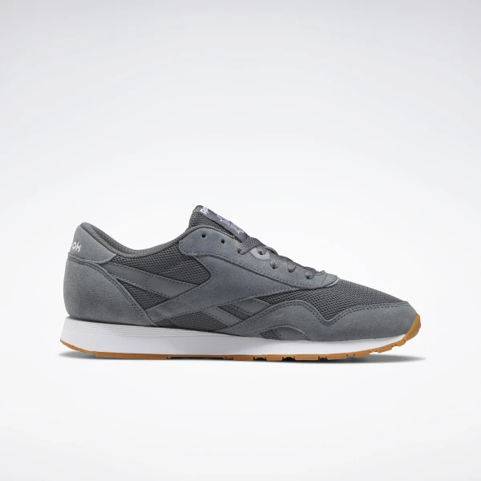

Кроссовки Reebok Classic Nylon

Описание товара
Кроссовки Reebok, вдохновленные культовым дизайном 80-х
Характеристики товара
- Материал верха: нейлон и замша
- Стелька из пеноматериала для дополнительной амортизации
- Легкая и удобная промежуточная подошва из ЭВА
- Стойкая к истиранию резиновая подметка обеспечивает отличное сцепление
- Страна-производитель: Вьетнам
- Материал: 60% Кожа / 40% Текстиль
- Цвет модели: Cold Grey 6 / Cold Grey 4 / White
- Номер модели: EF3278
Подробное описание товара
Всегда в тренде. Новая версия мужских кроссовок Reebok Classic Nylon,
дебютировавших в 1984 году, максимально близка к оригиналу.
Монохромный верх из замши и нейлона сохраняет привлекательную эстетику минимализма.